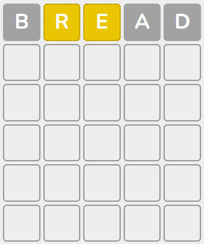
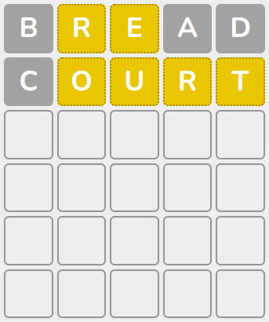
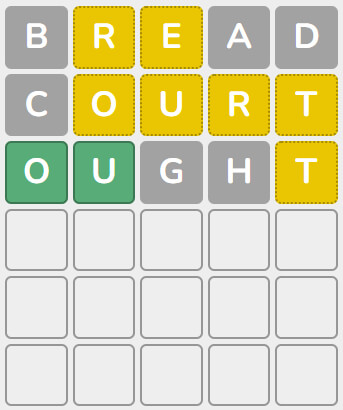
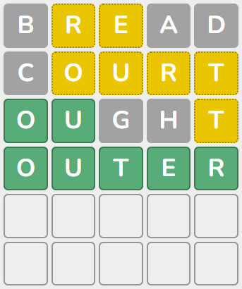

Ang Wordle ay naimbento ng isang developer mula sa Brooklyn para sa kanyang syota. Ang apelyido ng lumikha ay Wardle, kaya ang pangalan ng laro ay isang uri ng pun.
Sa una, ang mag-asawa ay naglaro ng Wordle nang magkasama, pagkatapos ay ipinakita ng developer ang laro sa kanyang mga kamag-anak, at pagkatapos ay nagpasya na i-publish ito sa Internet para sa lahat na interesado. Sa araw ng paglulunsad, 90 tao ang naglaro, at makalipas ang ilang buwan - kasing dami ng 300 libo.
Si Wardle mismo ay naniniwala na ang lihim ng katanyagan ng laro ay nakasalalay sa pagiging simple nito - hindi na kailangang magrehistro sa site, walang mga ad, isang masayang libangan lamang.
Ang isang natatanging tampok ng orihinal na laro ay mayroon itong limitasyon - isang laro lamang bawat araw. Isang kawili-wiling desisyon, ngunit hindi lahat ay nagustuhan ito. Ang laro ay sobrang nakakahumaling na gusto mong maglaro ng higit pa at higit pa. At nalutas na namin ang problemang ito - ngayon ay nare-replay na ito nang walang hanggan, kaya maaari kang maglaro ng walang limitasyong bilang ng mga laro at hulaan ang maraming salita hangga't gusto mo.
Tingnan mo. Ang iyong layunin ay upang malaman kung anong salita ang nakatago. Bilang default, binubuo ito ng 5 titik, ngunit sa aming site maaari mong itakda ang bilang ng mga titik mula 4 hanggang 11. Pagkatapos ay mayroong 6 na linya, sa bawat isa ay maaari mong ipasok ang anumang umiiral na salita.
Sa pamamagitan ng paglalagay ng unang salita, sinusubukan mong hindi hulaan kaagad ang salita, ngunit ang unang hakbang lamang sa laro, kung saan makakakuha ka ng mga pahiwatig tungkol sa salitang nahulaan. Matapos ipasok ang iyong unang salita at pindutin ang Enter button, ang lahat ng mga titik ng iyong salita ay magiging isa sa tatlong kulay - kulay abo, dilaw at berde.
Depende sa kulay, makakakuha ka ng impormasyon tungkol sa kung aling mga titik ang nasa nakatagong salita at kung alin ang wala doon. Ang lahat ay medyo simple dito. Ang mga titik na kulay abo - wala sila sa nakatagong salita, maaari silang ibukod. Ang mga titik na magiging dilaw - sila ay nasa nakatagong salita, ngunit sila ay nasa ibang lugar sa salita. Sa pamamagitan ng paraan, may posibilidad na mayroong higit sa isang ganoong mga titik sa salita, dahil ang mga titik ay maaaring paulit-ulit (o maaaring hindi paulit-ulit). Ngunit ang pangunahing bagay dito ay tiyak na wala sila kung nasaan sila sa salitang iyong ipinasok.
At sa wakas ay mga berdeng titik. Binabati kita, ang mga titik na ito ay nasa nakatagong salita at eksaktong matatagpuan sa lugar kung saan sila ay nasa iyong salita. Dito rin, hindi dapat kalimutan na ang mga titik na ito ay maaaring nasa nakatagong salita sa ibang mga lugar (o maaaring wala).
Pagkatapos ay ipasok mo ang susunod na salita at ang susunod, kaya nakakakuha ng higit pang impormasyon tungkol sa nakatagong salita. Ang iyong gawain ay upang makakuha ng sapat na impormasyon sa lalong madaling panahon upang hulaan ang nakatagong salita. Ang mas kaunting mga salita na iyong ipinasok, ang mas kaunting mga pagtatangka na ginawa mo bago hulaan ang salita, mas cool ka! Ang parehong bokabularyo at ang iyong kakayahang mag-isip ng lohikal ay mahalaga dito. Well, oras na para subukan!
Kaya, ang isang tiyak na salita ng 5 titik ay nahulaan. Subukan nating ipasok ang unang salitang Ingles ng 5 letra na naiisip. Dumating sa akin ang salitang TINAPAY, at ita-type ko ito.
Matapos ipasok ang salitang tinapay, pinindot ko ang Enter button. Dalawang titik mula sa aking salita ang naka-highlight sa dilaw. Ibig sabihin may mga letrang R at E sa nakatagong salita. Pero nasa ibang lugar sila. Ngunit ang mga titik B, A at D ay nawawala sa nais na salita. Well, mag-type tayo ng isa pang random na salita sa pangalawang row at pindutin ang Enter.
Ang pangalawang salita na pinasok ko ay COURT. Dito sabay-sabay 4 na letra ang nakatanggap ng dilaw na kulay. Ngayon, batay sa dalawang pagtatangka, alam namin na ang nais na salita ay naglalaman ng mga titik O, U, R, T, E. Ngunit hindi namin alam kung anong pagkakasunud-sunod ng mga ito. Ngunit ang tamang salita ay hindi pumapasok sa isip. Well, subukan natin ang ilang salita na naglalaman ng ilan sa mga titik na ito.
Ang salitang iyon ay naging DAPAT. At dito nakakuha kami ng maraming bagong kapaki-pakinabang na impormasyon. Ang mga letrang O at U ay naka-highlight sa berde, na nangangahulugan na sa salitang hinahanap natin, sila ay nasa mga lugar na ito. So our word starts with OU and also contains the letters R, T, E. I think I know this is the word OUTER! Suriin natin.
Bingo! Nahulaan namin ang salita sa 4 na pagtatangka. Ito ay isang magandang resulta para sa isang mahirap na salita. Subukan ito ngayon.
 Wordle
Wordle
 Water Sort
Water Sort


 Ingles (US)
Ingles (US) Ingles (UK)
Ingles (UK) Espanyol
Espanyol Aleman
Aleman Pranses
Pranses Portuges
Portuges Italyano
Italyano Dutch
Dutch Polish
Polish Ruso
Ruso Turkish
Turkish Swedish
Swedish Indonesian
Indonesian Czech
Czech Griyego
Griyego Hungarian
Hungarian Romanian
Romanian Slovak
Slovak Danish
Danish Ukrainian
Ukrainian Irish
Irish Filipino
Filipino Norwegian
Norwegian Serbian
Serbian